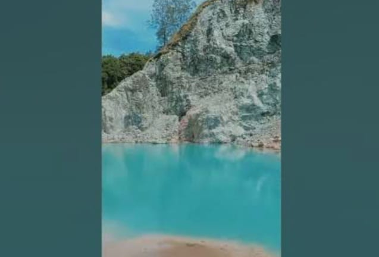

üåä Daya Tarik & Fenomena Alam
- Terbentuk dari bekas galian kerikil yang kini diisi tiga mata air jernih.
- Warna air berubah dari biru cerah di pagi hari menjadi putih susu saat senja.
- Dikelilingi tebing cadas dan vegetasi hijau alami yang sangat fotogenik.
üìç Lokasi & Akses
- Terletak di Desa Tubu, Kecamatan Bikomi Lulat, TTU, dekat perbatasan Timor Leste.
- Akses melalui jalan tanah dan bebatuan – belum beraspal sepenuhnya.
- Transportasi umum belum tersedia. Disarankan menggunakan kendaraan pribadi atau ojek lokal.
üë• Profil Pengunjung
- Didominasi pecinta alam, fotografer, dan wisatawan yang mencari ketenangan.
- Aktivitas favorit: fotografi alam, eksplorasi, dan observasi fenomena warna air.
üí∞ Tarif Masuk
Saat ini belum ada tarif resmi. Pengunjung dapat masuk secara gratis, namun disarankan memberi kontribusi sukarela untuk mendukung kebersihan dan pengelolaan lokal.
✉️ Etika & Kebijakan Adat
- Telaga dianggap suci oleh warga setempat, wajib menjaga sikap dan kebersihan.
- Dilarang mencuci, buang sampah, atau melakukan aktivitas yang merusak lingkungan.
- Hormati aturan dan arahan warga sebagai bentuk penghormatan terhadap adat lokal.
Sumber: Dokumentasi Warga Tubu • catatanlapangan.org